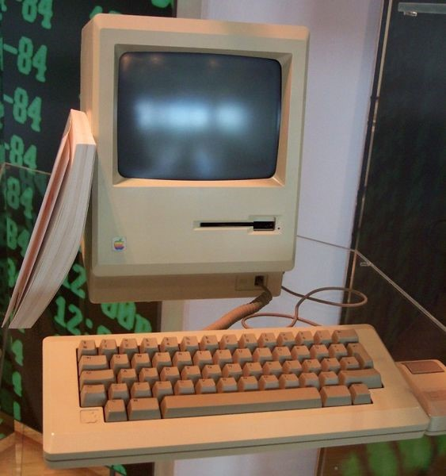
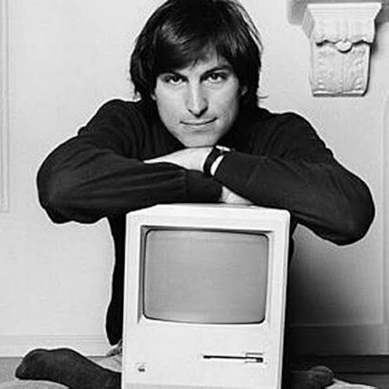
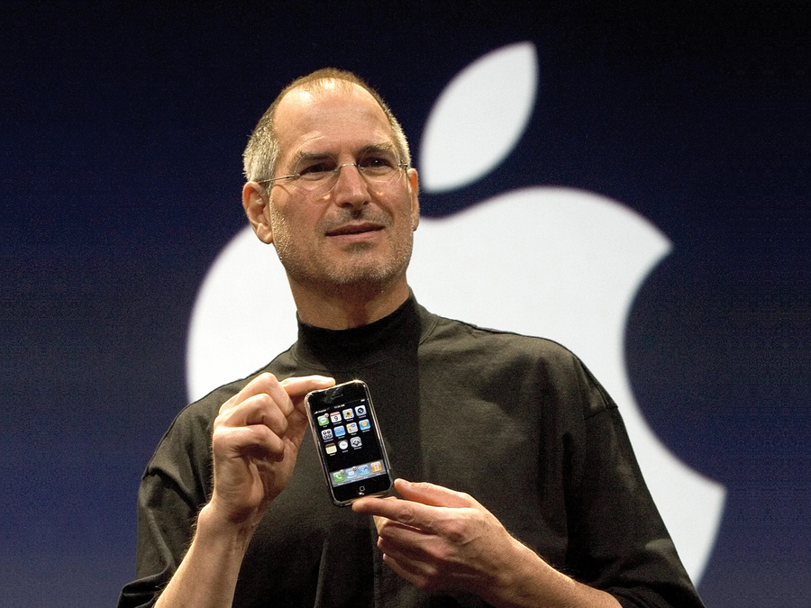
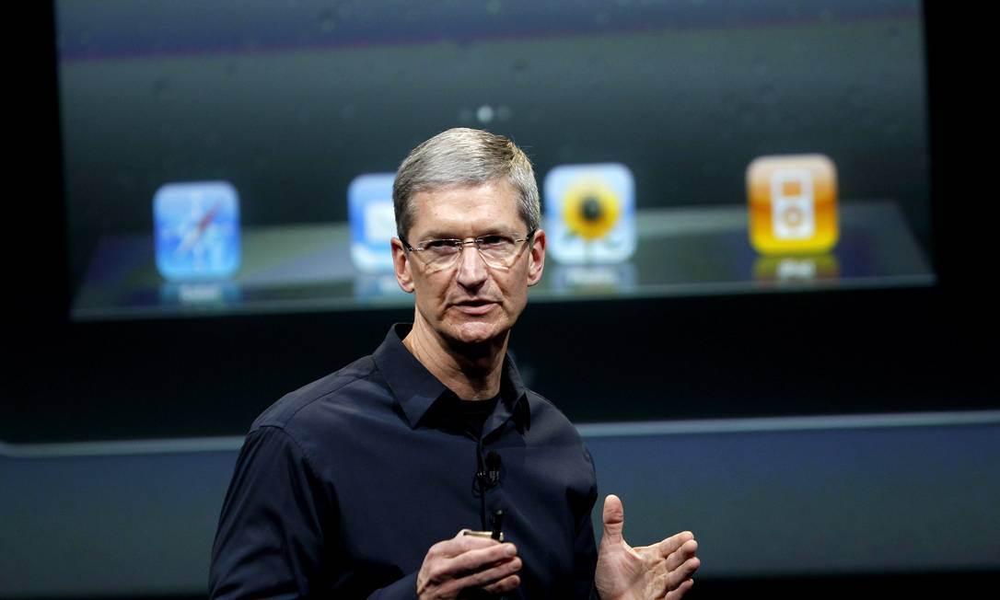

A História da Apple: Da Garagem ao Topo do Mundo
A Apple foi fundada em 1º de abril de 1976, na Califórnia, por Steve Jobs, Steve Wozniak e Ronald Wayne. O que começou com o computador artesanal Apple I transformou-se em uma das maiores empresas de tecnologia do mundo.
Início e primeiros computadores (1976–1984)

Apple I (1976): Criado por Wozniak e comercializado por Jobs, era basicamente uma placa de circuito vendida a US$ 666,66. Ronald Wayne vendeu sua parte de 10% por US$ 800 logo após a fundação.
Apple II (1977): Primeiro grande sucesso comercial da empresa, com design mais completo e fácil de usar. Impulsionou o crescimento da Apple e seu IPO em 1980.
Lisa e Macintosh (1983–1984): O Lisa introduziu uma interface gráfica com mouse, e o Macintosh (1984) popularizou esse formato para o público geral.
Crise e saída de Steve Jobs (1985–1996)

Após disputas internas e queda de vendas frente à concorrência, Steve Jobs deixou a Apple em 1985 e fundou a NeXT.
Durante a década de 1990, a empresa enfrentou prejuízos, linhas de produtos fragmentadas e perda de espaço para o Windows, chegando perto da falência.
Retorno de Jobs e revolução móvel (1997–2011)

Em 1997, a Apple comprou a NeXT e trouxe Jobs de volta à liderança. Ele simplificou o portfólio e lançou o iMac (1998), recuperando a saúde financeira da marca.
A empresa expandiu para novos mercados com o iPod e o iTunes (2001), o iPhone e a App Store (2007) e o iPad (2010), redefinindo a indústria de eletrônicos e aplicativos.
Era Tim Cook (2011–presente)

Com o afastamento e a morte de Steve Jobs em 2011, Tim Cook assumiu como CEO, focando na cadeia de suprimentos, na expansão global e no crescimento do ecossistema de serviços e wearables (como Apple Watch e AirPods).
A Apple ultrapassou US$ 1 trilhão em valor de mercado em 2018 e consolidou-se como uma potência multitrillionária em hardware, software e serviços digitais.